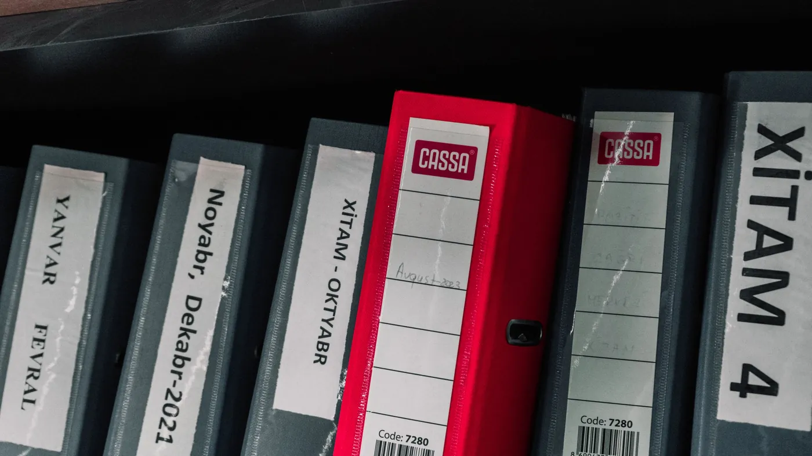

A format for packaging what an agent knows how to do just moved to a neutral foundation. The format matters less than what it asks of you: a written procedure somebody actually owns.
On 22 October the Agentic AI Foundation, the Linux Foundation group set up last December, took on four new projects, bringing it to ten in its first year. Anthropic contributed Agent Skills, an open format for packaging a capability so any compatible agent can pick it up. OpenAI contributed Open Responses, a common request and response format across model providers. Hugging Face and Alibaba added projects for testing agents in isolated environments.
The Agent Skills numbers reported with the announcement are large: support on more than 70 platforms, over a million skills published, 280 million installs. Moving it under a neutral foundation means no single vendor controls where it goes next. That is ordinary standards housekeeping, worth knowing about and no reason to change plans overnight.
Strip away the packaging and a skill is a written instruction set: when this kind of request arrives, here is what to check, which documents to consult, what to do, and when to stop and ask. The industry is converging on a shared way to write that down because agents with no written procedure behave inconsistently, and inconsistency is what customers notice.
Most support teams don't have that procedure written anywhere an agent could read it. It lives in the head of the person who has handled warranty claims for six years, in a Slack thread from last spring, in a wiki page nobody has touched since the policy changed. When that person leaves, the procedure leaves with them. When you hand the work to an agent, the agent inherits the gaps.
So the business question is whether you own a written, current, testable version of how your team handles its twenty most common requests. Which format wins comes second. If you have those pages, they move with you between tools and vendors. If you don't, every new agent project starts by rediscovering them.
CX-Builder is where that written procedure turns into something an agent follows. You put the policy documents and procedure notes into a document store, so the agent answers from your current text and cites it. You build each recurring task, such as a refund check or an address change, as its own small flow with a clear input and a clear result. A front-line agent then calls those flows as tools, which means the refund procedure is built once and every agent that needs it uses the same one.
Because the platform is self-hosted, those flows and documents sit on your infrastructure. You can export a flow and keep it in version control, so you can see exactly what changed and when. A human-in-the-loop step stays on any procedure where a mistake costs money, so a person signs off until the procedure has earned more trust.

Start with one procedure. Load the relevant policy pages into a document store with a vector index, then build an agentflow that retrieves from it, checks the customer record through a tool node, and returns a structured result with an approval step on anything above a set value. Save it as a reusable flow and test it against last month's real tickets before any other agent is allowed to call it.
The second procedure goes faster than the first, because the document store, the record lookup and the approval step already exist.
This quarter, pick the five request types your team handles most and ask who could write each procedure down in a page. Give each page an owner and a review date. Whatever agent format wins in two years, a business with those pages can adopt it in weeks, and one without them starts from interviews.